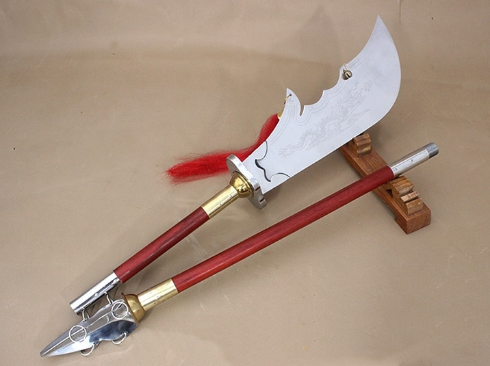
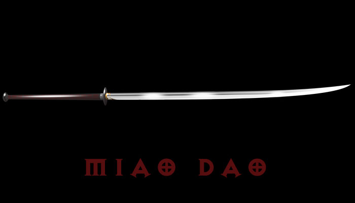

Armas Brancas Chinesas
Guan Dao/Kwan Dao

O Guan dao ou Kwan dao, conhecido também como "a lâmina do general", é a mais típica das armas do kung fu.
Origem do Nome
O nome Guan Dao é uma homenagem ao seu usuário mais famoso, o General Guan Yu (關羽) (160–219) um herói real também famoso como personagem do épico chinês "Os Três Reinos", escrito por Luo Guanzhong no século XIV. Ele é uma das figuras das artes marciais mais significativas, lendário "santo protetor" das artes marciais. É honrado em muitos altares ancestrais, e nenhuma escola de kung fu pode ser considerada "tradicional" sem a presença do General Guan. Dao é comumente traduzido como faca ou espada, porém essa tradução é um tanto deficiente visto que dao aparece no nome de muitas armas chinesas. Uma melhor tradução poderia ser "lâmina", uma vez que toda espada e faca insinua algo menor e todo dao é curvo, com uma única extremidade. A forma da lâmina distingue-se entre as armas de bastão.
Miao Dao

O miaodao (苗刀) é um dao ou sabre chinês de duas mãos da Era Republicana, com uma lâmina estreita, punholongo, e um comprimento total de 1,2 metros (47 polegadas) ou mais. O nome significa "sabre de broto", presumivelmente referindo-se a uma semelhança entre a arma e uma planta recém-germinada. Uma referência inicial, em Single Defense-Saberde Jin Yiming, faz uma conexão entre o miaodao e o wodao da era Qing, além de mencionar versões individuais e duplas do ''miaodao'' sugerindo que o nome originalmente descreveu a forma apenas, sem conotações de tamanho. Embora o miaodao seja uma arma recente, o nome passou a ser aplicado a uma variedade de sabres longos chineses anteriores, como o zhanmadao e o changdao. Junto com o dadao, miaodao foram usados por algumas tropas chinesas durante a Segunda Guerra Sino-Japonesa.
O miaodao também é muitas vezes erroneamente alegado ter sido uma das armas ensinadas na Academia Militar Central em Nanjing; a arma em questão era na verdade o sabre de um oficial de estilo europeu, embora algumas escolas posteriores possam ter baseado técnicas de miaodao neste formulário.